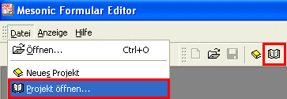
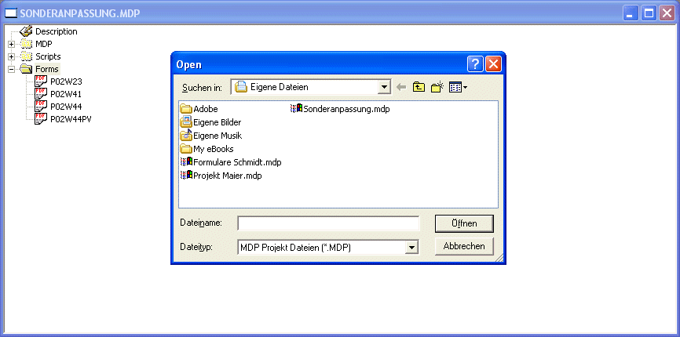
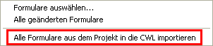
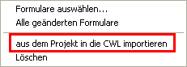

Um ein MDP-Projekt zu laden bzw. zu öffnen gibt es zwei Möglichkeiten:
Über den Menüpunkt Datei/Projekt öffnen, oder über die Symbolleiste "Projekt laden".

Nach Anwahl eines dieser beiden Möglichkeiten wird der Dateisuchdialog geöffnet, indem nach dem gewünschten Projekt gesucht werden kann.
Mittels Doppelklick bzw. Öffnen-Button wird das ausgewählte Projekt geöffnet.

Wie werden nun die angepassten Formulare aus dem Projekt in die WinLine importiert ?
Ist der Ordner "Forms" markiert, erscheint beim Anklicken der rechten Maustaste ein Kontextmenü.
Wird daraus der Eintrag
Ø Alle Formulare aus dem Projekt in die CWL importieren
angewählt, so werden alle Formulare aus dem Projekt in die CWL importiert.

Ist beim Anklicken der rechten Maustaste ein angepasstes Formular markiert, besteht über den Eintrag
Ø aus dem Projekt in die CWL importieren
die Möglichkeit, nur das ausgewählte Formular zu importieren.

Zusätzlich besteht über das Kontextmenü noch die Möglichkeit, Formulare zu löschen.